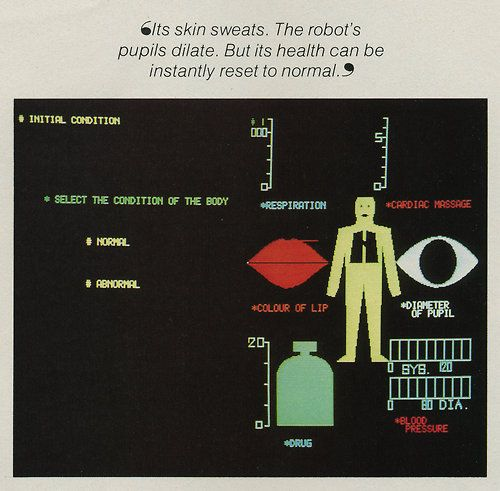
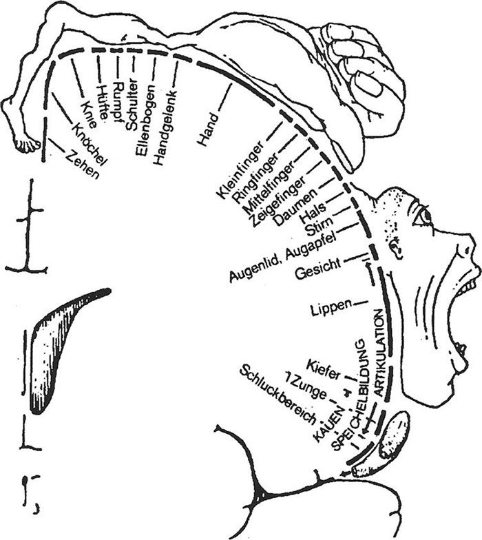
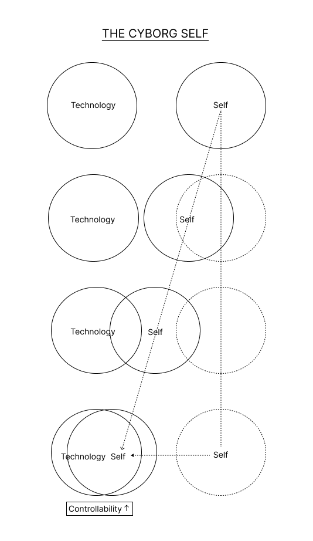
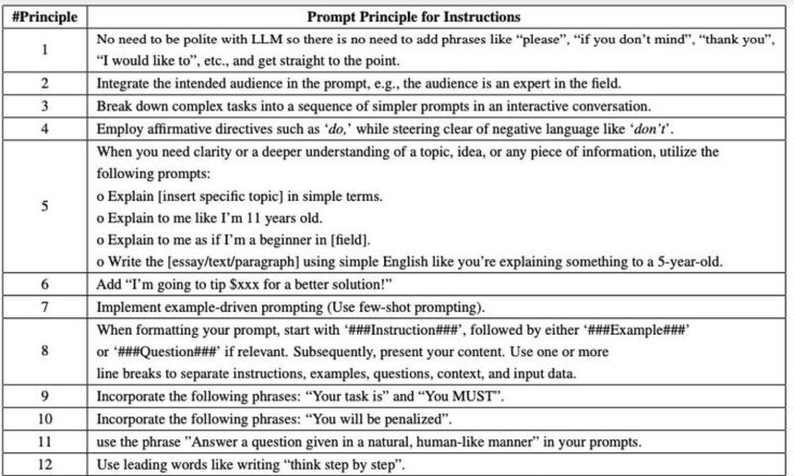
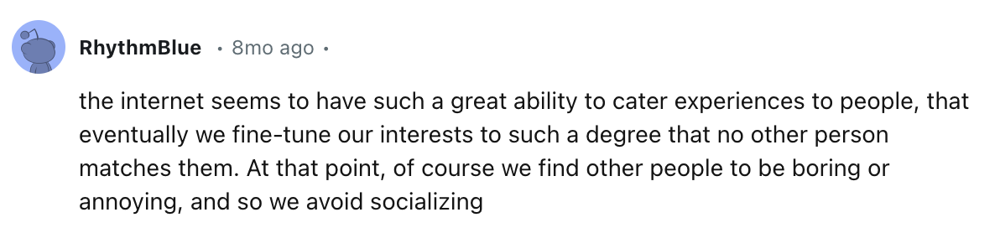
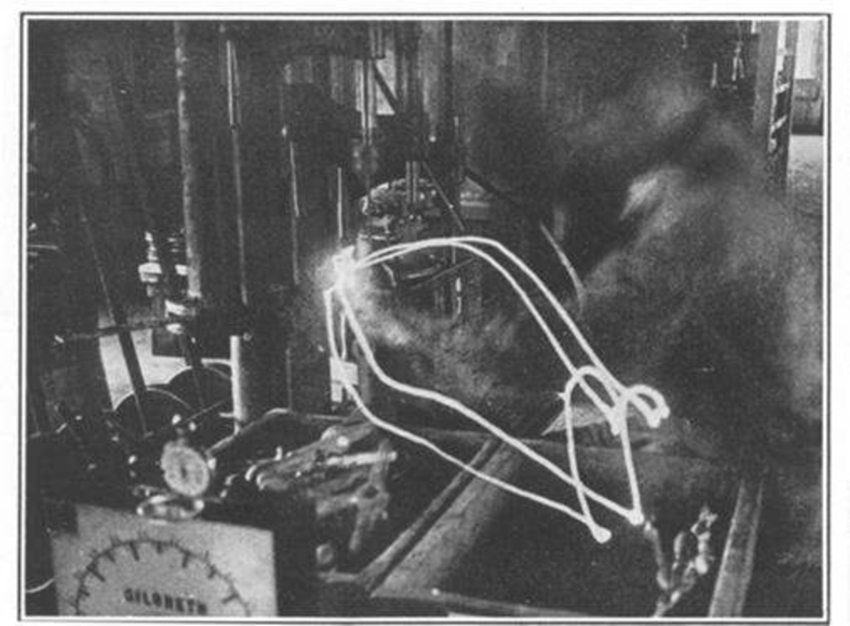
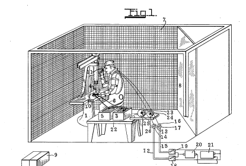
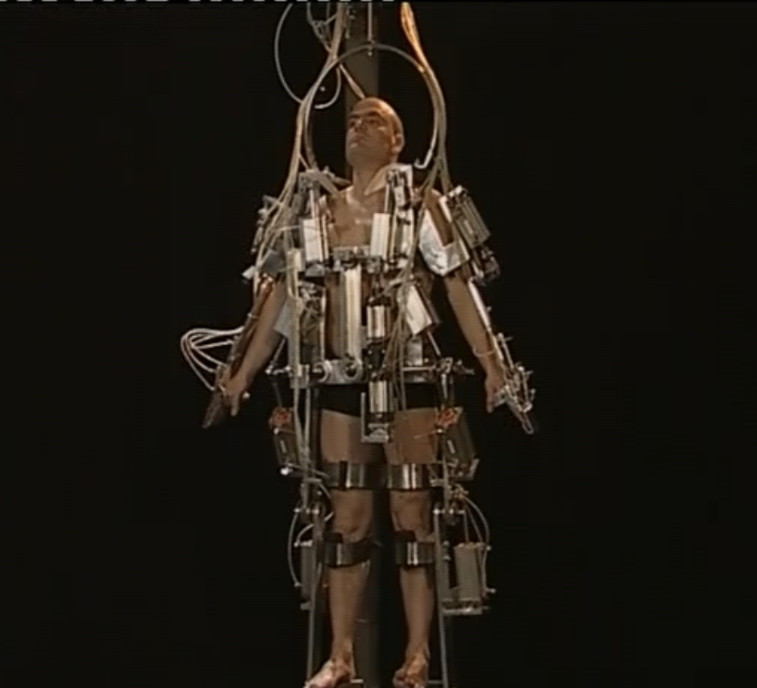
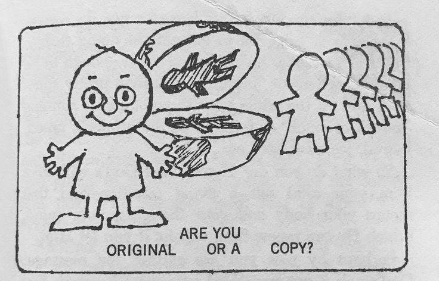

__ __ ______ __ __ ____ ____
/\ \/\ \ /\ _ \ /\ \/\ \ /\ _ `\ /\ _`\
\ \ \_\ \ \ \L\ \ \ `\\ \ \ \/\ \ \,\L \_\
+ -------------- \ \ _ \ \ __ \ \ , ` \ \ \ \ \ \ _\__ \ -------------- +
| \ \ \ \ \ \ \/\ \ \ \`\ \ \ \_\ \ /\ \L\ \ |
| \ \_\ \_\ \_\ \_\ \_\ \_\ \____/ \ `\____\ |
| \/_/\/_/ \/_/\/_/ \/_/\/_/ \/___/ \/_____/ |
| |
| |
| |
| "Technology is not neutral. We're inside of what we make, |
| and it's inside of us. We're living in a world of connections - |
| and it matters which ones get made and unmade." -Haraway |
| |
| |
| |
+____________________________________________________________________________ +
Fashioning replicas of ourselves ————————————————————————————————
When we look at a door, the door knob is an indication that the door can be opened. Depending on the type of door knob, one can get a sense of how we might use it: e.g. push it down, pull it forward, twist it right, unlatch it horizontally, and so on. In interaction design terms, this is a common example of describing ‘affordances.’ Affordances are "characteristics or properties of an object that suggest how it can be used. It shows a user that an object can be interacted with." It should be noted that an affordance is not merely a ‘property’ or attribute of an object. Instead an affordance is, "defined in the relation between the user and the object." In this sense, an affordance declares the various possibilities of action between the user and the object. A button is to be pressed, a lever is to be pulled, a keyboard is to be typed on. Pretty simple. Modern usage of highly engineered affordances have resulted in user manuals being objects of the past, as replacement technologies increasingly aim for seamless ubiquity. As Apple puts it: "If you can point, you can use a macintosh" or, "I think, therefore iMac."
But what’s happening as our machines are getting more complex and fluid? When interfaces turn into almost-blank screens that will respond to anything; when minimalism sleek is the standard, and when human body interfaces become increasingly normalized. When it’s to the point that our machines are just verisimilitude looking back at us, the affordances become unimaginably large, while also becoming increasingly familiar.
In the same way that our habit to collect data and share information stem from a desire for growth yet simultaneously encapsulate dissatisfactions we attempt to leave behind, so too do the tools, machines, functions, algorithms and physical products that we create. With that in mind it is an integral thing to approach all our technologies we are using, or creating, with this at the forefront of our minds: "growth has become this unmarked category granted magical powers. As growth remains the common sense, [...] a cascade of unseen consequences, side effects, also become second nature." It is no fault that we strive to improve ourselves and the environment around us through technological advancement– yet we must consider and acknowledge the real pitfalls and losses that come with gain. Mere tools such as cups, lenses, thread, etc. have very clear use cases, and thus very clear functions that might compensate for any dissatisfaction. What inadequacies do our sleek, high-technologies reflect and reveal about us? What are we attempting to leave behind with innovation such as virtual reality, cyborgs, thinking computers, simulation technologies, etc.? …Why do our tools look like humans?
Alexander Stein states that technology is "a human enterprise devised, driven, and shaped not only by experimentation and innovation, but by our interests, hopes, fears, foibles, and fantasies." While technology has come a long way in such a short amount of time, again and again we are dazzled by its potential, ignoring many shortcomings. If a shortcoming is identified, it is usually handled with yet another technology that suffers the same cycle.As we ourselves cope with dissatisfaction, so too do our technologies. The issue I identify in this section is the exertion of control leading to mega-hi-technologies: It can be argued that when we cannot control ourselves, the people around us or the environment around us, we attempt to make something we can control. The more and more we have distaste for ourselves, the people around us, and the world around us –the more we continue to create technologies to ‘handle’ it. In the same way we increasingly engineer our perspectives with data and systems and algorithms, we also continue to engineer our realities as well.
What this seems to have manifested into is the habit of looking towards the machine to reprieve us from our dissatisfaction, only to see a human looking back at you. In this section I will be examining how untethered dissatisfaction has resulted in the creation of overly controllable humans of both wire and flesh. When we begin to have issues differentiating the two, not only are we using a faulty outlet for our grappling with the human condition, but to micromanage technology is to micromanage ourselves, and vice versa.
Thinking Machines and Cyborgs –————————————————————————————————
Brian Christan, winner of the Turing Test’s Most Human Human Award ruminates, "Who would have imagined that the computer's earliest achievements would be in the domain of logical analysis [...] That it could fly a plane and guide a missile before it could ride a bike? That it could create plausible preludes in the style of Bach before it could make plausible small talk? That it could translate before it could paraphrase? That it could spin half-discernible essays on postmodern theory before it could be shown a chair and say, as most toddlers can, "chair"?" Within the past two years, everywhere you look within the media, AI is seen as a groundbreaking and unprecedented innovation. Large language models (LLMs) are currently being used to solve problems in seemingly every aspect of modern life, its main selling point seems to be its ‘humanness.’ While LLMs are viewed as a highly competent human-like technology that (supposedly) can solve many of man’s modern-day problems, I find these discrepancies in its abilities, pointed out by Brian Christain above, both fascinating and uncanny.
Following Christian’s train of thought, AI technologies have seemingly found a shortcut to human nature – being trained to match the competence of a PhD level psychologist, to be a emotionally mature companion, to be a moderator conscientious of human values, to do sentiment analysis for large-scale organization initiatives, to be an emotional support friend, and so much more. AI apparently does this all without learning first-hand what it means to recognize the smile of a parent, know what it is to share snacks with a friend, learn to listen to a close friends and family in distress, learn to recognize when someone might need help, learn first hand the theory of mind, and to ultimately grapple with concepts of solipsism: lessons of perception and care that are learned early on through the direct experience of human development.
Amidst a ‘loneliness epidemic’ within the US, we can directly see this modern habit developing. In hopes of alleviating social isolation, virtual companion solutions are becoming more and more prevalent. Even if we know these chatbots are faulty at their core, their mirage is still alluring: Investment predictions show that the global adoptions of companion AI applications will likely reach a popularity level similar to social media and online gaming. Within the relationship between ourselves and the humanoid robots we continue to create, the theme of dissatisfaction and shame is continuously strung throughout.
One could argue that humans have become more inclined to interact with anthropomorphized technology as "Anthropomorphism is more positively related to adoption when one’s need for human interaction is high. Anthropomorphic chatbots may be more readily adopted because they mimic human service agents and are thus perceived as easier to use." Furthermore, comparing human-to-human interaction and human-to-robot interaction, it can be argued that some have come to find comfort in automated interaction as opposed to human interaction. Recent research has found that some individuals held preference towards automated services over human services in embarrassing scenarios. Individuals may feel more comfortable using automated systems to talk about sensitive personal information, they may feel more compelled to ask a chatbot questions that otherwise may be viewed as ignorant or awkward. In this sense,feelings of shame may be averted due to these emerging technologies, as a user is talking to a chatbot rather than an actual person.
It is in many ways that our technologies allow us to cope with the shame of everyday life. Whilst this has positive benefits, such as allowing people to get help and social support that otherwise may not be available to them. However, our technologies should not condition users to come to expect unilateral and ultimate customization of reality and social interaction to our every whim. As psychotherapist, Esther Perel, contemplates, "What worries me is how digitally facilitated connections are lowering our expectations and competence in the intimacy between humans." Social bots continue to become more human-like as time progresses. However, when humans are aware they are talking to sophisticated robots there often an intrinsic knowing of difference in being. Specifically, in the case of robots or chatbots, "you don't converse with Google, or with most computer systems; you depose them."
With this dissonance in mind, it makes sense that any shame one might feel in a human-to-human social interaction dissipates when one of the humans is replaced by a machine: "We simply do not feel ashamed if, for instance, we are criticized or laughed at on account of our behavior by others whom we do not respect." I argue that it is because of this that We should never "substitute a computer system for a human function that involves interpersonal respect, understanding and love." This quote comes from Joseph Weizenhaum, who became one of science's most outspoken opponents of AI research and ended up discontinuing his own natural language processing computer program, called Eliza, in the 1960’s. For Weizenbaum, "we cannot humanise AI because AI is irreducibly non-human. What you can do, however, is not make computers do (or mean) too much".
With all this information, again we are faced with the question of how technologies that resemble ourselves affect users. One might argue that it’s a bit far-fetched to assume humans would be so silly as to confuse fully sentient humans to humanoid servants, treating both with a decreased sense of respect and empathy. It’s less concern over whether or not humans will outwardly confuse humans for machines, but instead concern for a mentality such as this to become increasingly pervasive and normal. Implications of such mentality can be seen resulting in natural language chatbots behaviorally nudging users, and users continuously relying upon such technologies regardless of the broader consequences for convenience, societal norms, and the seemingly inescapableness of AI technologies as a whole. All of this stemming from unmanageable and untethered dissatisfaction of the people around us, because they were not efficient enough, smart enough, beautiful enough, and not controllable enough.
Self-surveillance and technologies of human altercation ——————————————————————
Our own being-ness is not isolated from the developments of human-esque technologies stated above. Not only does human-like technologies change the landscape of our realities, but it also changes humans themselves. As automation becomes more commonplace and sophisticated, an argument is being made that this will free us from menial jobs and labor. As our technologies are manifesting into humanistic, superiorly skilled creatures for whom we command, it seems as these technologies advance, human counterparts are expected to keep up as well. As our technologies upgrade, so does the relative definition of what ‘efficiency’ is.
Take for example excerpts from the 1917 published book "Applied motion study: a collection of papers on the efficient method to industrial preparedness." The authors state, "There is no waste of any kind in the world that equals the waste from needless, ill-directed, and ineffective motions, and their resulting unnecessary fatigue. Because this is true, there is no industrial opportunity that offers a richer return than the elimination of needless motions, and the transformation of ill-directed and ineffective motions into efficient activity."
The book further suggests, "The men themselves become more efficient. They become specialists, skilled workers. They learn the motion-study method of attack, and are thus more fit to undertake any type of work. They learn to think in elementary motions, and to eliminate waste in every activity of their lives." The application of motion studies may utilize tools and methods such as motion pictures and charts, videos, time measuring, external observers, and self-reporting. With that being said, it seems that dissatisfaction of efficiency and productivity not only manifests in the creation of technological aids, but it also manifests in the training and modification of human behavior. While the authors of Applied Motion idealize that applied motion studies and execution will result in, "a greater number of promotions, more cooperation, more reading and study of the science of management, and higher wages earned with greater ease" – Not only does this turn out to be an inaccurate prediction of modern jobs due to the increased risk and multifaceted implications of being replaced by AI, but I argue the consequences of applying any type of standardization to humans often negate any perceived gain.
Let's switch gears for a moment to look at disability design studies. Kat Holmes, designer and technologist focused on disability technology ruminates that, there seems to be an imposed shame on disabled individuals, communicated through our very technologies. While technologies built for disabled individuals are in many cases an extraordinarily beneficial thing for the recipient, it should not go unnoticed that these technologies may state through their function that the user ‘is or is not abnormal,’ and either ‘does or does not require a device that will help them fit the status quo.’ For example, to replace a missing arm with a mechanical arm may hold undertones of accusation: "The emphasis on restoring the visual features of a body so that the loss and difference, the before and after, might be undetectable, can preclude the alternate possibilities that individual experience and proclivities might suggest." The lesson to be gathered here is that standardization for the sake of imposed norms of those who control technologies, closes many other doors of possibilities for individuals."There is a natural inclination to use yourself as a shortcut to make assumptions about the people that you’re designing for." When paying attention to the way that various marginalized communities are being treated by the people, systems, and technologies in power, you can start to get a better sense of what a technology is overlooking. One person interviewed by Jillian Weise: "The insurance company could pull my data and decide whether I have used my leg enough to justify the next one." In this case, by getting a device to help you live, you are sacrificing an extreme level of privacy and control.
Combining the idea of innovator ego, dissatisfaction of control, and increased expectations for human ability based upon unrealistic expectations of a perfect human cyborg, and cyborg humans: Not only are technologies used to impose their viewpoints onto users, but the control methods being used by technology companies are becoming increasingly more direct. It is through both these subsets of technology that we see control being exerted to reinforce ideals that users did not consentfully subscribe to. Not only do these technologies have social and cultural implications, but they also hold real control. This mentality of technology not only targets those who are considered disabled, but all individuals. In the words of Hari Kunzru, "The cyborg age is here and now, everywhere there's a car or a phone or a VCR. Being a cyborg isn't about how many bits of silicon you have under your skin or how many prosthetics your body contains. It's about Donna Haraway going to the gym, looking at a shelf of carbo-loaded bodybuilding foods, checking out the Nautilus machines, and realizing that she's in a place that wouldn't exist without the idea of the body as a high-performance machine. It's about athletic shoes."
And further, "Winning the Olympics in the cyborg era isn't just about running fast. It's about "the interaction of medicine, diet, training practices, clothing and equipment manufacture, visualization and timekeeping." The recurring theme here is utilizing seemingly helpful technologies to spread belief about what it means to be human on every level. These ideas and this information isn’t just for those who are considered disabled. When perfection is the goal, everyone is subject to shame and pressured to change. "Technology is not neutral. We're inside of what we make, and it's inside of us. We're living in a world of connections - and it matters which ones get made and unmade."
Our replicas are funny looking —————————————————————————————————
When we increasingly begin to see ourselves within our technologies, what does that say about our perception of ourselves? Artist, Tobias Bradford, whose medium revolves around replicating human qualities onto machines, states "it is quite a primal thing to [...] project human qualities onto objects, especially the ones that specifically sort of invite that interpretation through various means– either that they are anthropomorphic in nature physically or that they act in anthropomorphic ways– as in like something seeming chaotic or unexpected or you know, sentient." Questions to continue to grapple with include: How may seeing animal/humanistic mannerism and behavior within our technology impact the way in which we interact with those machines, and how in turn may that affect us? If the choices of our creators increasingly look like the creators themselves, or aim to alter, modify, and upgrade humanity — what does that look like in our technology, and how does that change technology’s users and subsequently our environment?" It is here where things get murky: In all of these attempts to see ourselves within our creations, these replicas become that of control as innovators and the money behind innovation hyperfocus on inner dissatisfaction and the assumption that their users desire exactly what they desire.
There is a very cyclical nature to this whole dance with our replicas: As author Sara Hendren puts it, "A body –any body– will take its cues, bend the available resources, and invent its being with the matter around it." And likewise, any mind, perspective, emotion and manner of interacting with those around us become an increasingly larger aspect of our technologies of tomorrow. It seems the very action of applying standardization of humans for the sake of efficiency undos humanness itself. It is one thing to make a replica out of love, it is another thing to make a replica out of ego. As our technologies move closer and closer to becoming replicas, it seems the further we stray from ourselves. Not only this, but hi-technologies often undermine and overlook already existing technologies or cycles that work (just to come back to them later on often). Or tramples them, for perceived value of time-saving efficiency. The trajectories of our technology have become increasingly controlling, exploitative, neurotic and insidious as both creator and users cope with a never-ending cycle of shame and dissatisfaction, projecting them onto our high technologies, before having those technologies insight never ending modifications of ourselves.









